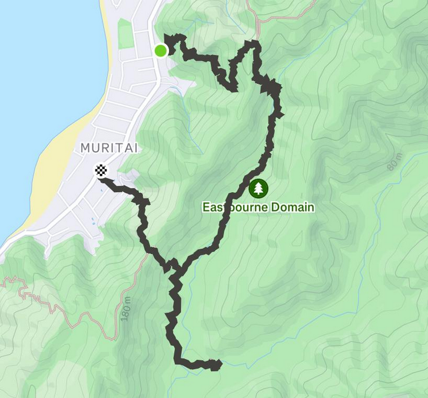
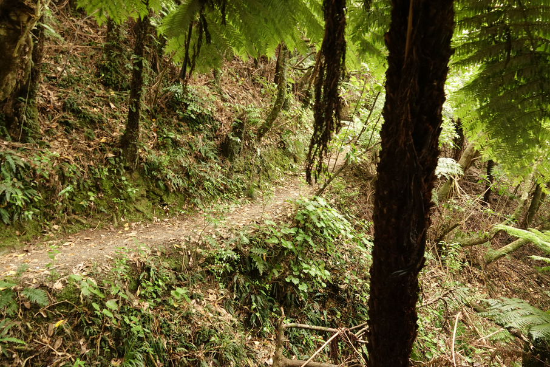
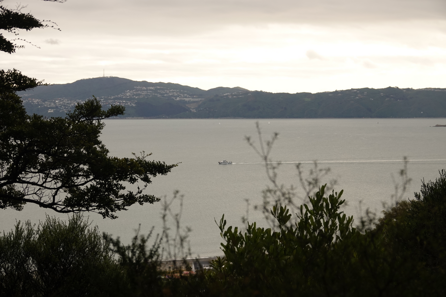
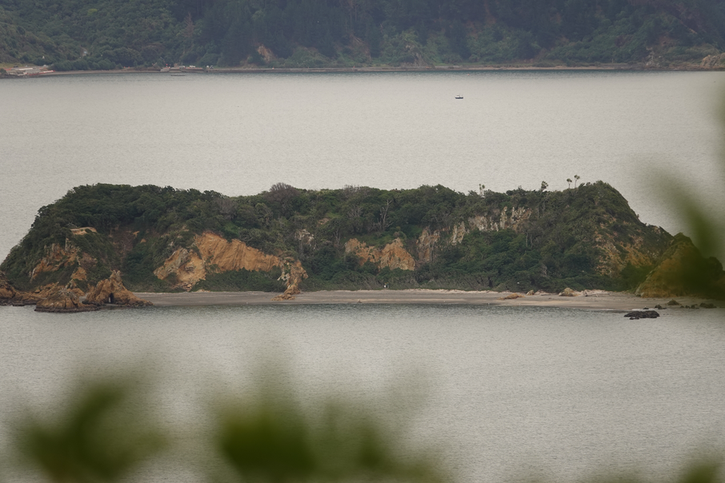
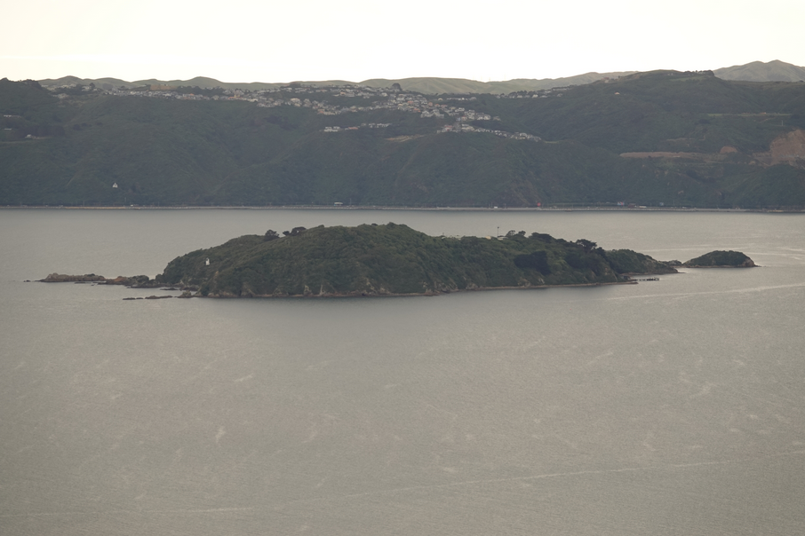
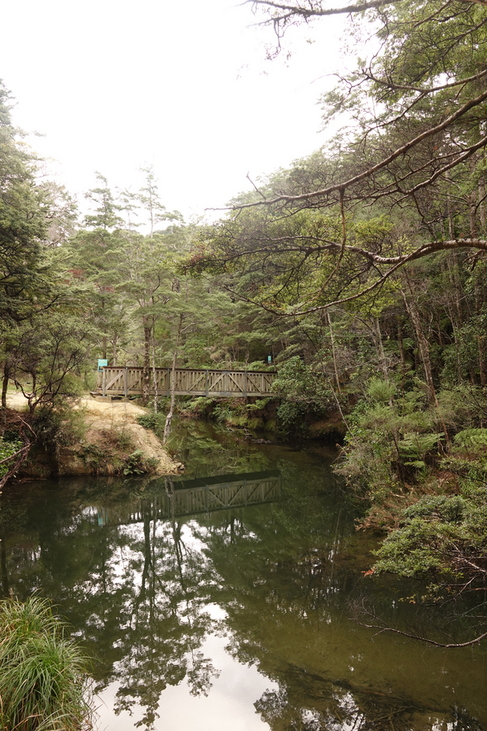
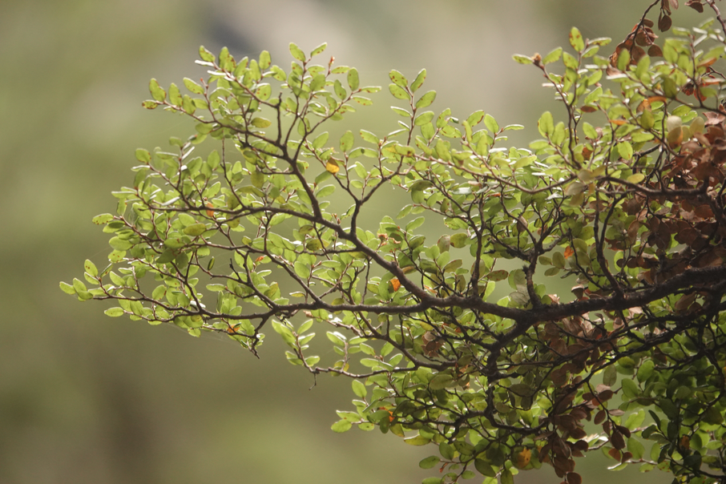
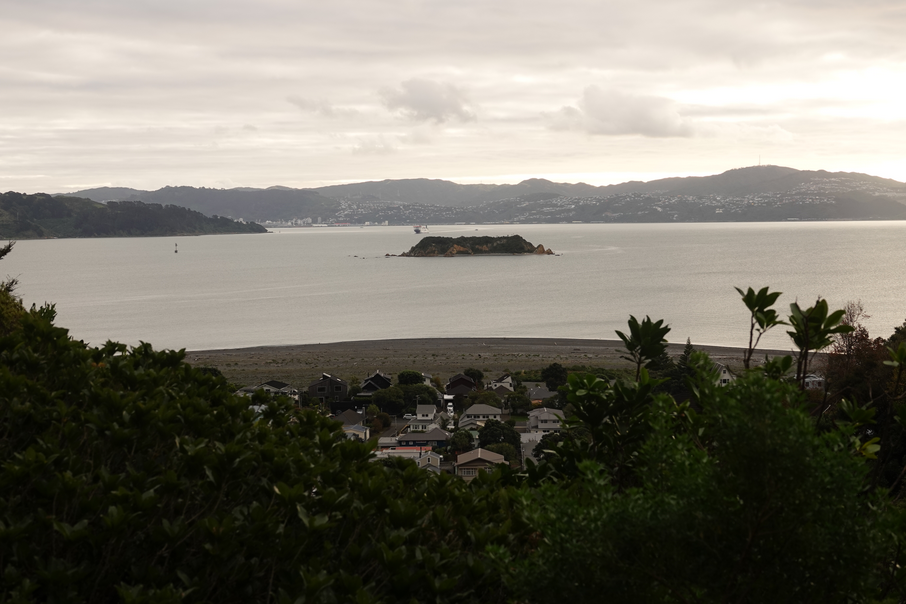

Created at: 2026-05-17


The beginning of the track (Muritai Park)

First view of the beach after the initial climb.

Makaro / Ward Island.

Somes Island

Picnic area

Beech tree

Last view of the track